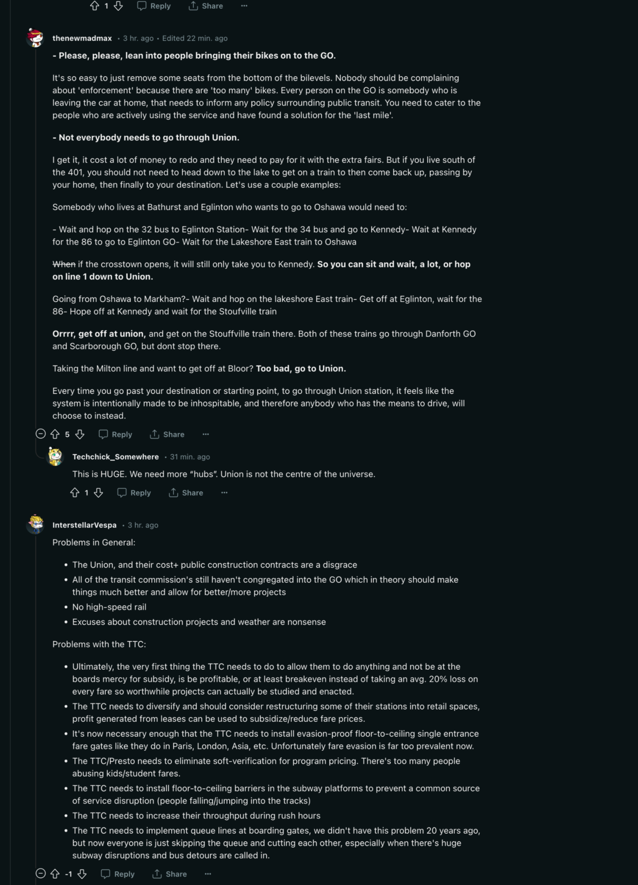
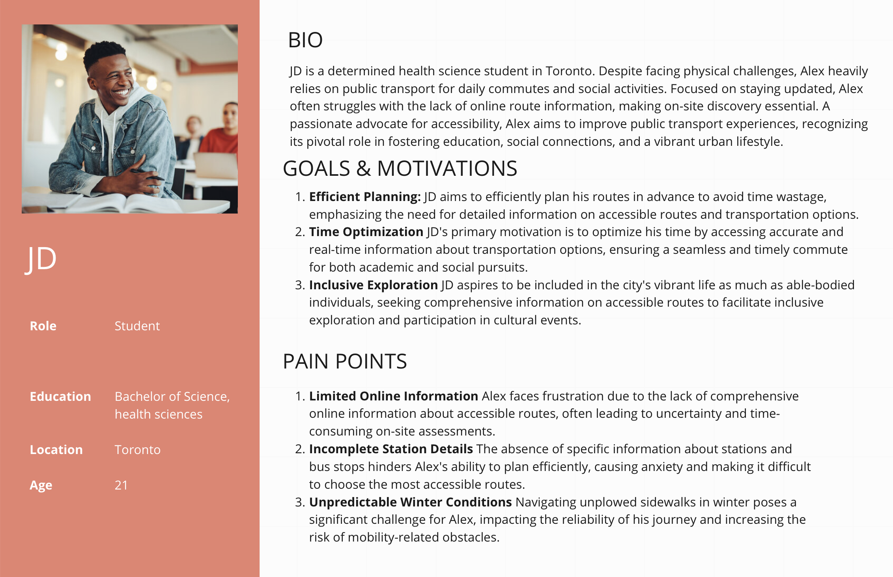
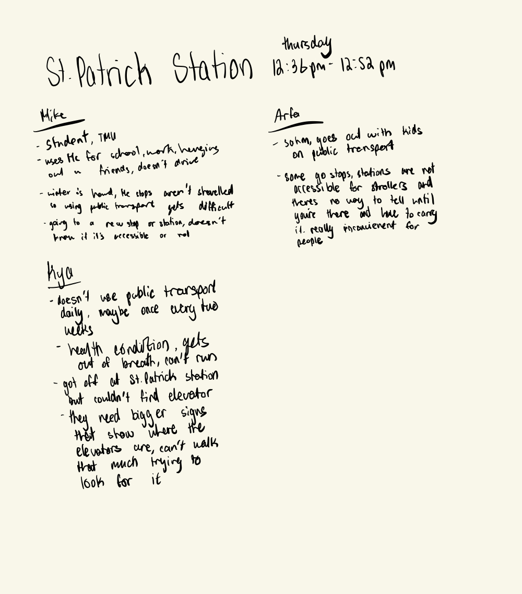
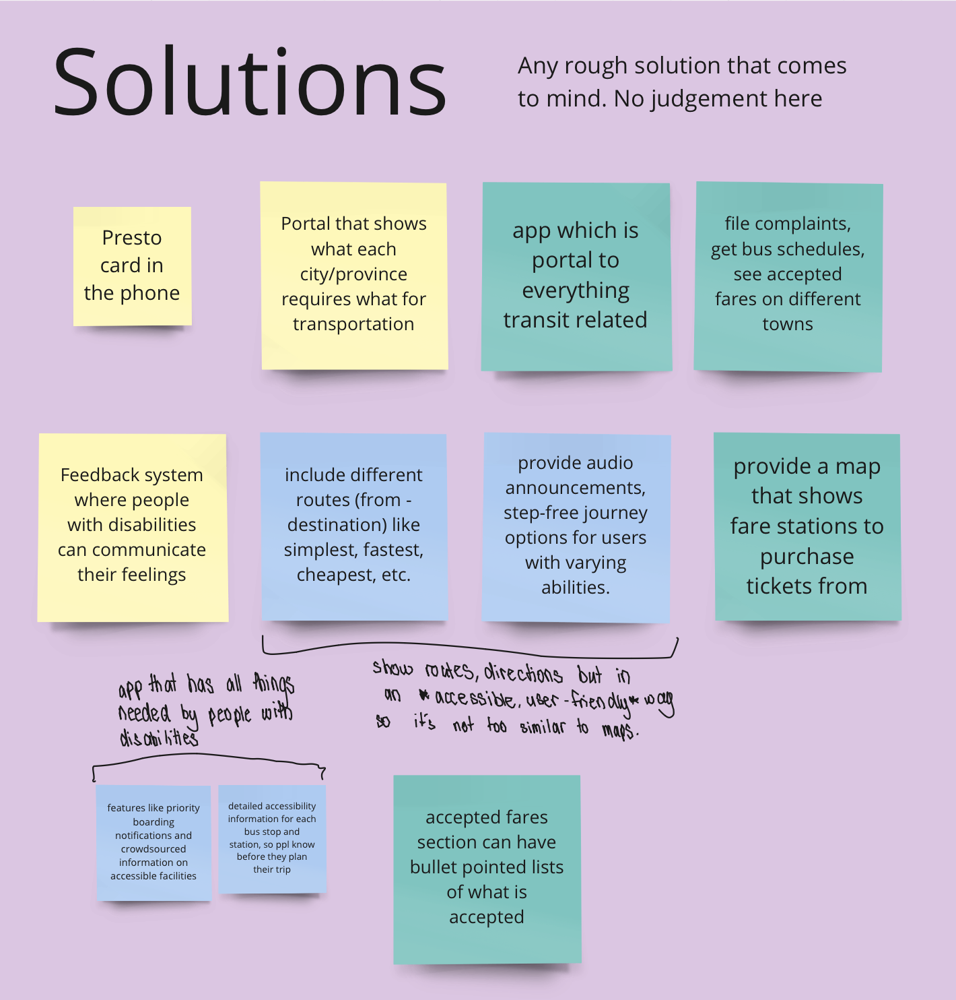

A dedicated app for Ontario citizens with disabilities,
provides instant accessibility information for a smoother
and more inclusive transportation experience.
Hackathon Victory
During my co-op at the Ministry of Transportation,
our team crafted the My Transit app during a hackathon
focused on enhancing transportation accessibility. Our comprehensive
solution secured our victory by addressing real-world challenges
faced by individuals with disabilities in navigating public transportation.
"Team 3 stood out with their app design and user experience, earning a high score for
easy navigation, overall visual appeal and consideration for accessibility and inclusivity.
The judges were impressed by their dedication to user research, bringing in real personas and
user needs, on top of the end-to-end functionality of the application."
Pre-Discovery
Conducted initial research using secondary resources (online forums such as Reddit)
to gain a high-level understanding of the challenges faced by individuals with
disabilities in navigating public transportation.
Explored existing apps and solutions in the market to identify gaps and
potential areas for innovation.

×
Discovery
Conducted guerrilla testing near St Patrick station in downtown Toronto to
observe firsthand the challenges faced by individuals with disabilities.
Collaboratively engaged in affinity mapping sessions to synthesize research findings,
distilling key insights into a focused problem statement.
Decided on a problem with a reasonable scope, establishing a clear and concise problem
statement.
People with disabilities face challenges in navigating public transportation
due to a lack of comprehensive information on the accessibility features of vehicles, stops,
and stations.

×

×
Ideation
In the ideation phase, we explored various solutions, considering options like a personal assistance
request system and paratransit booking. However, our collective decision pointed towards a
crucial need: providing users with real-time information on accessibility.

×
Validate + Iterate
Real-time Accessibility Updates: Live information on the accessibility status
of stations, stops, and vehicles across Ontario.
Route Recommendations for Wheelchair Accessibility: Tailored route suggestions to
prioritize wheelchair accessibility.
Interactive Live View with Elevator/Ramp Locations: Real-time visual aids guiding users to locate elevators and ramps within each station.
Comprehensive Accessibility Database: Detailed information on the accessibility features of vehicles, stops, and stations.
Refining the "My Transit" app during the validate and iterate phase, we fine-tuned it based on valuable user feedback. Iterating through ideas and
feedback loops, we aligned the prototype with Ontario Design System (ODS) and AA accessibility standards, utilizing Figma for seamless collaboration.